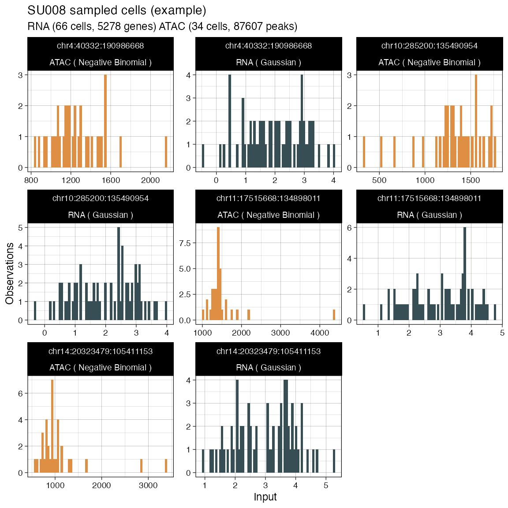

Single-molecule assay
data('example_input')
# Example only RNA, with z-score representation (Gaussian likelihood)
x = init(
rna = example_input$x_rna,
atac = NULL,
segmentation = example_input$x_segmentation,
normalisation_factors = example_input$x_normalisation_factors,
rna_likelihood = "G",
atac_likelihood = 'NB',
description = 'My crazy model')
#> ┌────────────────────────────────┐
#> │ │
#> │ (R)CONGAS+: My crazy model │
#> │ │
#> └────────────────────────────────┘
#>
#> ── RNA modality (16.755992 Mb)
#> → Input events: 438133
#> → Input cells: 53
#> → Input locations: 17200
#> → Entries mapped: 438133, with 0 outside input segments that will be discarded.
#> → Using likelihood: G.
#> ! Gaussian likelihood requires z-score representation of input values.
#> → Normalising RNA counts using input normalisation factors.
#> → Computing z-score.
#> ! There are 2994 z-scores that are NA, will be removed.
#> # A tibble: 2,994 x 10
#> gene cell value chr from to segment_id modality value_mean value_sd
#> <chr> <chr> <dbl> <chr> <int> <int> <chr> <chr> <dbl> <dbl>
#> 1 TBX15 SRR5… NaN chr1 1.19e8 1.19e8 chr1:0:24… RNA 1 0
#> 2 PLAU SRR5… NA chr10 7.39e7 7.39e7 chr10:0:1… RNA 5 NA
#> 3 TRIM… SRR5… NA chr11 5.59e7 5.59e7 chr11:0:1… RNA 2 NA
#> 4 EDN2 SRR5… NA chr1 4.15e7 4.15e7 chr1:0:24… RNA 1 NA
#> 5 CHL1 SRR5… NA chr3 1.97e5 4.09e5 chr3:0:19… RNA 1 NA
#> 6 DNAJ… SRR5… NA chr2 2.19e8 2.19e8 chr2:0:24… RNA 51 NA
#> 7 RAPG… SRR5… NaN chr7 2.21e7 2.24e7 chr7:0:15… RNA 1 0
#> 8 HMCN1 SRR5… NA chr1 1.86e8 1.86e8 chr1:0:24… RNA 1 NA
#> 9 ACTA1 SRR5… NaN chr1 2.29e8 2.29e8 chr1:0:24… RNA 1 0
#> 10 MUC4 SRR5… NA chr3 1.96e8 1.96e8 chr3:0:19… RNA 1 NA
#> # … with 2,984 more rows
#> → Centering the new scores around input ploidy values.
#>
#> ── Checking segmentation
#> ✓ Nothing to process.
print(x)
#> ── [ (R)CONGAS+ ] My crazy model ───────────────────────────────────────────────
#>
#> ── CNA segments (reference: GRCh38)
#> → Input 22 CNA segments, mean ploidy 2.
#>
#> | | | | | | | | | | | | | | | | | | | | |
#>
#> Ploidy: 0 1 2 3 4 *
#>
#> ── Modalities
#> → RNA: 53 cells with 17200 mapped genes, 438133 non-zero values. Likelihood: Gaussian.
#> → ATAC: not available
#> ! Clusters: not available.
#> [1] 0
# Select the first 5 segments to plot
some_segments = get_input(x, what = "segmentation") %>%
filter(row_number() < 5) %>%
pull(segment_id)
plot_data(x, what = 'histogram', segments = some_segments)
plot_data(x, what = 'lineplot')
#> → Scaling RNA observed values by number of genes mapped per segment.
plot_data(x, what = 'heatmap')
Two single-molecule assays
# Joint RNA (as above), and ATAC (discrete count, Negative Binomial likelihood)
x = init(
rna = example_input$x_rna,
atac = example_input$x_atac,
segmentation = example_input$x_segmentation,
normalisation_factors = example_input$x_normalisation_factors,
rna_likelihood = "G",
atac_likelihood = 'NB',
description = 'My crazy model')
#> ┌────────────────────────────────┐
#> │ │
#> │ (R)CONGAS+: My crazy model │
#> │ │
#> └────────────────────────────────┘
#>
#> ── RNA modality (16.755992 Mb)
#> → Input events: 438133
#> → Input cells: 53
#> → Input locations: 17200
#> → Entries mapped: 438133, with 0 outside input segments that will be discarded.
#> → Using likelihood: G.
#> ! Gaussian likelihood requires z-score representation of input values.
#> → Normalising RNA counts using input normalisation factors.
#> → Computing z-score.
#> ! There are 2994 z-scores that are NA, will be removed.
#> # A tibble: 2,994 x 10
#> gene cell value chr from to segment_id modality value_mean value_sd
#> <chr> <chr> <dbl> <chr> <int> <int> <chr> <chr> <dbl> <dbl>
#> 1 TBX15 SRR5… NaN chr1 1.19e8 1.19e8 chr1:0:24… RNA 1 0
#> 2 PLAU SRR5… NA chr10 7.39e7 7.39e7 chr10:0:1… RNA 5 NA
#> 3 TRIM… SRR5… NA chr11 5.59e7 5.59e7 chr11:0:1… RNA 2 NA
#> 4 EDN2 SRR5… NA chr1 4.15e7 4.15e7 chr1:0:24… RNA 1 NA
#> 5 CHL1 SRR5… NA chr3 1.97e5 4.09e5 chr3:0:19… RNA 1 NA
#> 6 DNAJ… SRR5… NA chr2 2.19e8 2.19e8 chr2:0:24… RNA 51 NA
#> 7 RAPG… SRR5… NaN chr7 2.21e7 2.24e7 chr7:0:15… RNA 1 0
#> 8 HMCN1 SRR5… NA chr1 1.86e8 1.86e8 chr1:0:24… RNA 1 NA
#> 9 ACTA1 SRR5… NaN chr1 2.29e8 2.29e8 chr1:0:24… RNA 1 0
#> 10 MUC4 SRR5… NA chr3 1.96e8 1.96e8 chr3:0:19… RNA 1 NA
#> # … with 2,984 more rows
#> → Centering the new scores around input ploidy values.
#>
#> ── ATAC modality (1.62176 Mb)
#> → Input events: 27303
#> → Input cells: 42
#> → Input locations: 11192
#> → Entries mapped: 27303, with 0 outside input segments that will be discarded.
#> → Using likelihood: NB.
#>
#> ── Checking segmentation
#> ✓ Nothing to process.
plot_data(x, what = 'histogram', segments = some_segments)
#> → Normalising ATAC counts using input normalisation factors.
plot_data(x, what = 'lineplot')
#> → Normalising ATAC counts using input normalisation factors.
#> → Scaling RNA observed values by number of genes mapped per segment.
#> → Scaling ATAC observed values by number of peaks mapped per segment.
plot_data(x, what = 'heatmap')
#> → Normalising ATAC counts using input normalisation factors.